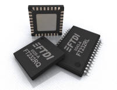

|
Caracter�sticas del FT232RL |
 |
El integrado FT232RL es una soluci�n ideal para reemplazar el puerto RS232 por el USB en los nuevos dise�os. Viene con drivers libres de royalties para la mayor�a de los sistemas operativos, nosotros lo hemos probado en Windows y Linux.
Un �nico chip maneja tanto el USB como la tranferencia serie as�ncrona.
La UART admite 7/8 bits de datos, 1/2 stop bits y Odd/Even/Mark/Space/No Parity.
Tasa de tranferencia de 300 Baudios a 3M Baudio (RS422/RS485 con niveles TTL).
Tasa de tranferencia de 300 Baudios a 1M Baudio (RS232).
Soporte para USB suspend/resume a trav�s de los pines SLEEP# y RI#.
Soporte para alimentar dispositivos directamente del bus USB a trav�s del pin PWREN#.
Circuito Power-On-Reset incluido.
Tensi�n de alimentaci�n 3,3V a 5,25V.
Compatible con el controlador de host UHCI/OHCI/EHCI.
Compatible con USB 1.1 y USB 2.0.
USB VID, PID, n�mero de serie y descripci�n del producto almacenados en una memoria EEPROM interna.
Encapsulado peque�o 28-SSOP.
Este documento se distribuyen bajo licencia FDL por lo que se permite su copia, modificaci�n y distribuci�n, siempre y cuando se mantenga esta nota.
| Pin | Nombre | Tipo | Descripci�n |
| 1 | TXD | Out | Transmisión de datos |
| 2 | DTR# | Out | Data Terminal Ready |
| 3 | RTS# | Out | Request to send |
| 4 | RXD | In | Recepción de datos. |
| 5 | VCCIO | PWR | |
| 6 | RI# | In | Ring Indicator |
| 7 | GND | PWD | |
| 8 | NC | NC | |
| 9 | DSR# | In | Data set ready |
| 10 | DCD# | In | Data carrier detect |
| 11 | CTS# | In | Clear to send |
| 12 | CBUS4 | I/O | Entrada/salida configurable |
| 13 | CBUS2 | I/O | Entrada/salida configurable |
| 14 | CBUS3 | I/O | Entrada/salida configurable |
| 15 | USBDP | I/O | USB Data signal Plus |
| Pin | Nombre | Tipo | Descripci�n |
| 16 | USBDM | I/O | USB Data signal Minus |
| 17 | 3V3OUT | Out | Salida del regulador L.D.O.integrado de 3,3V. Este pin debe conectarse a un condensador de 100uF. |
| 18 | GND | PWD | |
| 19 | RESET# | In | Pin para poder realizar un reset desde el exterior. Si no se utiliza, se conectar� a VCC. |
| 20 | VCC | PWD | Tensi�n de alimentaci�n (+3,3V a +5,25V) |
| 21 | GND | PWD | |
| 22 | CBUS1 | I/O | Entrada/salida configurable |
| 23 | CBUS0 | I/O | Entrada/salida configurable |
| 24 | NC | NC | |
| 25 | AGND | PWD | Analog Ground |
| 26 | TEST | In | Pone el chip en modo test, debe conectar a GND para un funcionamiento normal |
| 27 | OSCI | In | Entrada al oscilador de 12MHz. |
| 28 | OSCO | Out | Salida del oscilador de 12MHz. |
Future Technology Devices International Ltd.: P�gina del fabricante del integrado FT232RL
10/Julio/2007: Publicado en la web